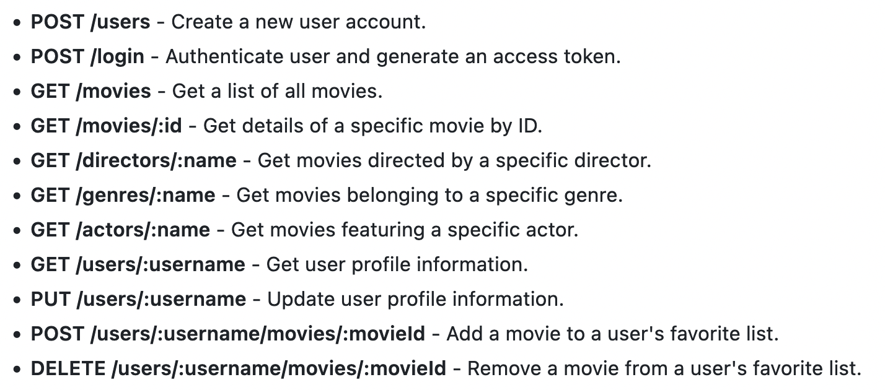
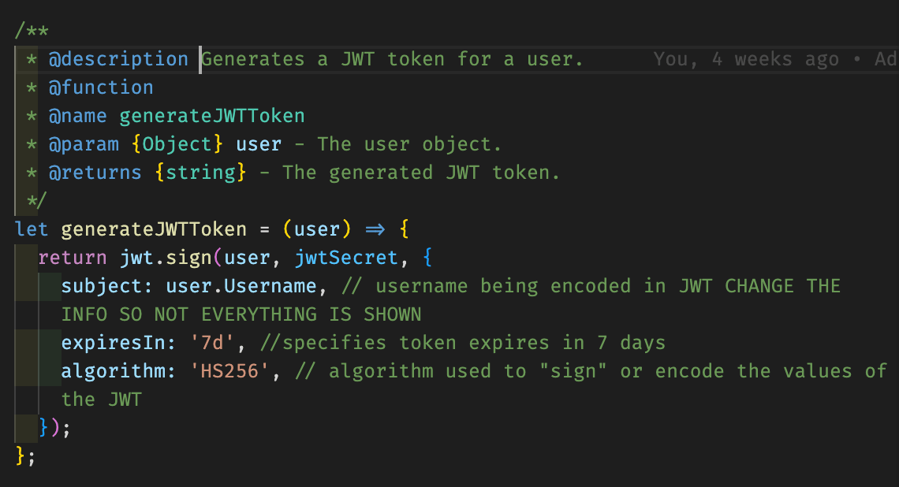

Case Study mFlixApp
Overview
The mFlixApp, is a movie app built utilizing the MERN stack. This project aimed to demonstrate proficiency in both server-side and client-side technologies, providing users with the ability to:
- Browse a collection of movies with detailed information
- View movie details, including title, description, genre, director, actors, and release year
- Add movies to their list of favorites
- Manage their profile
Purpose and Context
This endeavor, an integral part of my CareerFoundry full-stack web development course, provided a hands-on opportunity to apply theoretical knowledge in a practical context.
Objective
My goal was to construct a responsive movie app from start to finish, featuring advanced functionalities such as search, user authentication, and management.
Duration
3 weeks server-side and 5 weeks client-side (8 weeks total)
Tools
Credits & Role
- Lead dev: Sarah Keller
- Tutor: Ahmed Mahfoudh
- Mentor: Stephen Barungi
- GitHub repos
- ChatGPT
Stage 1: Server-Side Development
RESTful API
The focus of this phase was establishing the backbone of the mFlixApp. It involved the creation of a RESTful API via Node.js and Express, employing a non-relational database, MongoDB, and employing the Mongoose library for the collection schemas. HTTP endpoints were defined to access the ‘movies’ and ‘users’ collections for CRUD operations such as returning user info, updating user info, returning the movies list. The endpoints were tested with Postman.
User Authentication
In order to ensure that no unauthorized CRUD operations could be performed, JWT authentication was employed to require users to sign in and sign up. Password hashing was also implemented to ensure that the user’s password could not be read even by the database manager.
Stage 2: Client-Side Development
Following the completion of the backend, the emphasis shifted to creating the client-side of a responsive movie app using React. Using the database and endpoints, I implemented views such as the registration and sign-up page, user profile with info, favorite movies, ability to edit the profile, and the main page with the movies. A user has the ability to click on a movie for a dialog with more detailed information on the movie, genre, date and director. A button also allows the user to favorite or unfavorite the movie. For the visual aspects, the UI library React Bootstrap was used. This enabled a more structured and uniform manipulation of the visuals.
Additional Angular Front-end
Later in the course, the client-side was also built with Angular and Angular Material (see image below), which can be seen on the projects page
Results and Conclusions:
The mFlixApp stands as a testament to my learning in both backend and frontend technologies, providing a responsive, feature-rich movie app with user authentication and management capabilities.
Challenges and Learnings:
The server-side creation appeared more straightforward, though I found experimentation with relational databases frustrating and enlightening as it demonstrated that a large amount of the work is done in the planning as changing things becomes complicated. The authentication process created the most issues and took some time to follow properly. Regarding the client-side, challenges were encountered in managing prop dependencies in React, extending the duration of this task beyond the usual and highlights the learning curve associated with React. A literal application of console.log(), alerts and error messages were vital in determining what information was being passed. While the modularity of React is quite impressive, the seeming lack of structure posed the greatest frustration. Implementing the profile functionalities was the most frustrating as following the thread became more complicated with the prop dependencies. Experimentation with codebases and external assistance played a crucial role in overcoming these challenges.
Future Steps
Looking ahead, I aim to deepen my knowledge of React and debugging to improve efficacy, code and to enhancing the client-side functionality via features such as a skeleton loader. My design is quite basic and could stand to be improved. Additionally, I’d like to add Redux for state management to organize that more. Overall, it cemented the notion that in future, in times of frustration, taking a step back and turning focus on gaining a deeper understanding of the material is crucial.
Project Retrospective
Reflecting on the project, I found satisfaction in backend development, the magic of executing commands in the terminal, and building a complete product. Appreciation goes to my tutor and mentor for their invaluable support.